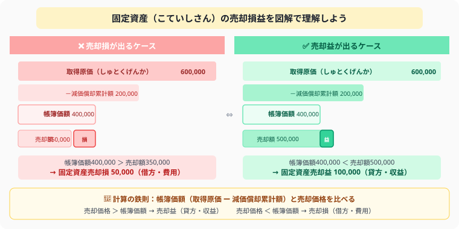

固定資産の取得・売却の仕訳
付随費用・売却損益を図解で完全解説
- 取得原価＝本体価格＋付随費用——送料・設置費も含めた金額で資産を計上する
- 売却損益＝売却価格－帳簿価額——帳簿価額（取得原価－減価償却累計額）との差額が損益
- 期中売却は月割りで当期分だけ償却——「×ヶ月÷12」で計算する
- 修繕費（費用）と資本的支出（資産）の区別が試験頻出——「能力を高めるか・維持するか」で判断
こんにちは、大谷です！実は、初めて簿記で「固定資産の売却」を習ったとき、「取得原価はそのまま貸方に出すのに、なぜ減価償却累計額をわざわざ借方に持ってきて相殺するの？」「土地を売ったのに、なんで売掛金が使えないの？」と、パズルのルールが二重に絡んできて「うわっ、なんじゃこりゃ……！」と脳内が完全にパニックになりました（笑）。
でも実は、この単元の正体は「今の価値（帳簿価額）」と「実際に売れた値段（売却価格）」を天秤に乗せて、どっちが重いかを見るだけのシンプルな比較ゲームだったんです。天秤が売却価格側に傾けば儲け（売却益）、帳簿価額側に傾けば損（売却損）——この天秤のイメージさえ持てば、複雑に見えた仕訳が一瞬で解けるようになります。当時の僕と同じようにパニックになっている皆さんに、この裏技をそのままお届けします！
また、記事の末尾のほうにある【いいねボタン】をポチッと押してもらえると、僕のモチベーション維持のために、めちゃくちゃ嬉しいです！
建物・備品・車両など長期間使う資産を固定資産といいます。取得時は付随費用を含めた金額で記録し、売却時は帳簿価額と売却価格の差額で損益を計算します。減価償却（定額法）の記事と合わせて読むと理解が深まります。
🏢 ① 固定資産を取得したときの仕訳——付随費用を含めた取得原価の計算
固定資産を購入するときは、本体価格＋付随費用（送料・設置費など）をまとめて資産の取得原価として記録します。
備品 ¥500,000 を購入し、送料・設置費用 ¥20,000 とともに現金で支払った。
送料・設置費・登記料など、資産を使えるようにするためにかかった費用はすべて取得原価に含めます。別途「費用」として処理してはいけません。
❓ なぜ付随費用を取得原価に含めるのか？——「使えるようにするためのコスト」はすべて原価
「運送費や登記料は費用で処理すればいいのでは？」と思うかもしれません。しかし会計では、固定資産を「使える状態にするまでにかかった全コスト」を取得原価として資産に計上します（取得原価主義）。
建物5,000円を購入、登記料100円を別々に費用計上した場合：
・建物の帳簿価額が5,000円となり、実際のコストが資産に反映されない
・毎期の減価償却費が実態より少なく計算される（P/LもB/Sも不正確になる）
・今期の利益が登記料100円分だけ不当に少なくなる
① 「使える状態にするまでのコスト全額」が取得原価 → 建物5,000＋登記料100＝取得原価5,100円
② 固定資産は長期間使用する → コストも耐用年数にわたって毎期少しずつ費用化（減価償却）される
③ 取得時の正確なコストをB/Sに反映 → 財務諸表の正確性・信頼性を確保
商品仕入の諸掛り（運送費など）を仕入原価に含めるのと同じ考え方！
💰 ② 固定資産を売却したときの仕訳——帳簿価額との差額が固定資産売却損益になる

図解の通り、売却損益の計算は「帳簿価額（取得原価 − 減価償却累計額）」と「売却価格」の比較で決まります。帳簿価額より高く売れれば売却益、安ければ売却損です。まずこの構造を頭に入れてから例題に進みましょう。
売却時は「帳簿価額」と「売却価格」を比べて、差額を固定資産売却損（費用）または固定資産売却益（収益）として記録します。
売却損が出るケース——帳簿価額より安く売れたとき
取得原価 ¥600,000・減価償却累計額 ¥200,000 の備品を ¥350,000 で現金売却した。
売却益が出るケース——帳簿価額より高く売れたとき
取得原価 ¥600,000・減価償却累計額 ¥200,000 の備品を ¥450,000 で現金売却した。
減価償却後の帳簿価額（¥400,000）ではなく、取得原価（¥600,000）を貸方に記録します。減価償却累計額を借方に出して相殺するのがポイントです。
📅 ③ 期中売却（月割り計算）——期末前に売却したときは当期分の償却を忘れずに
会計期間の途中で売却する場合、売却月までの減価償却費を計上してから売却の仕訳をします。
期首帳簿価額 ¥400,000 の備品（年間減価償却費 ¥60,000）を、期首から6か月後に ¥340,000 で売却した。
① 月割りで当期の減価償却費を計上 → ② その後で売却仕訳
60,000 × 6/12 ＝ 30,000円を先に計上し、帳簿価額を更新してから売却損益を計算します。
🏠 ④ 家賃・地代の仕訳——支払家賃は費用、受取家賃は収益で記録する
建物の貸し借りには家賃、土地の貸し借りには地代を使います。支払う側（借主）は費用、受け取る側（貸主）は収益として処理します。
「支払〇〇」は費用、「受取〇〇」は収益。命名ルールが統一されているので覚えやすい。
🔑 ⑤ 敷金（差入保証金）と仲介手数料——返ってくるお金と費用になるお金を区別する
賃貸借契約を結ぶときは、敷金・仲介手数料・家賃を同時に支払うことが多いです。「返ってくるか否か」で勘定科目が変わります。
事務所の賃貸借契約を締結した。敷金 ¥200,000・仲介手数料 ¥50,000・当月家賃 ¥80,000 を現金で支払った。
📋 ⑥ 未収入金・未払金——固定資産の後払い取引では「売掛金・買掛金」を使わない
固定資産など商品以外のものを後払いで売買したとき、売掛金・買掛金は使いません。専用の勘定科目を使います。
売掛金・買掛金は「商品の後払い」専用。固定資産など商品以外は「未収入金・未払金」を使います。「何を売買したか」で判断しましょう。
🔧 ⑦ 修繕費 vs 資本的支出（改良費）——「元に戻すだけ」か「能力アップ」かで判断する
固定資産を修理・改良したとき、その目的によって費用か資産かが変わります。
元に戻すだけ（原状回復・現状維持）→ 修繕費（費用）
価値が上がる・使用可能期間が延びる（改良）→ 建物・備品などに加算（資産）
試験では「修繕のため」「改良のため」などの文言で判断します。
📋 まとめ：固定資産 早見表
固定資産の売却は、帳簿価額と売却価格を天秤に乗せるだけのシンプルなパズルです。この記事が少しでも「あ、そういうことか！」につながったら、僕の執筆のモチベーション維持のために、この下にある【いいねボタン】をポチッと押してもらえると、めちゃくちゃ嬉しいです！